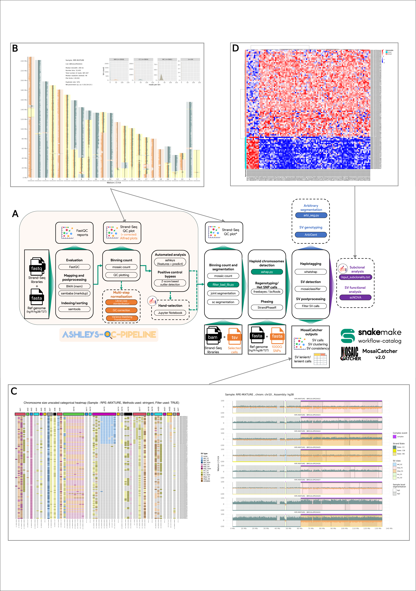

Overview

ashleys-qc-pipeline & mosaicatcher-pipeline dependencies
From 2.2.0, you don't need to clone both ashleys-qc-pipeline preprocessing module and mosaicatcher-pipeline. By using ashleys_pipeline_only=True combined with ashleys_pipeline=True in the configuration of MosaiCatcher, this will stop the execution after the generation of the files related to ashleys-qc-pipeline. This allow you to use a single pipeline, repository and container and limit the potential conflicts by processing the same folder (data_location) by different repositories and set of files (including the workflow/data/ref_genomes references files).
Ashleys-QC Pipeline
This workflow uses Snakemake perform Quality Control analysis on Strand-Seq single-cell sequencing data. The starting point are single-cell FASTQ files from Strand-seq experiments and the final output produced is a folder with clean selected BAM files. The pipeline can identify automatically high-quality libraries through ML-based analysis tool ashleys-qc. Thus, the workflow goes through the following steps:
- FASTQ sequencing Quality Control through FastQC
- Mapping FASTQ against a reference genome throught BWA
- Sorting, Deduplicating and Indexing of BAM files through Samtools & sambaba
- Generating features and use ashleys-qc model to identify high-quality cells
MosaiCatcher
The starting point in MosaiCatcher are single-cell BAM files from Strand-seq experiments and the final output are SV predictions in a tabular format as well as in a graphical representation. To get to this point, the workflow goes through the following steps:
- Binning of sequencing reads in genomic windows of 200kb via mosaic
- Strand state detection
- [Optional] Normalization of coverage with respect to a reference sample
- Multi-variate segmentation of cells (mosaic)
- Haplotype resolution via StrandPhaseR
- Bayesian classification of segmentation to find SVs using MosaiClassifier
- Visualization of results using custom R plots
📆 Roadmap
Technical-related features
- Zenodo automatic download of external files + indexes (1.2.1)
- Multiple samples in the parent folder (1.2.2)
- Automatic testing of BAM SM tag compared to sample folder name (1.2.3)
- On-error/success e-mail (1.3)
- HPC execution (slurm profile for the moment) (1.3)
- Full singularity image with preinstalled conda envs (1.5.1)
- Single BAM folder with side config file (1.6.1)
- (EMBL) GeneCore mode of execution: allow selection and execution directly by specifying genecore run folder (2022-11-02-H372MAFX5 for instance) (1.8.2)
- Version synchronisation between ashleys-qc-pipeline and mosaicatcher-pipeline (1.8.3)
- Report captions update (1.8.5)
- Clustering plot (heatmap) & SV calls plot update (1.8.6)
-
ashleys_pipeline_onlyparameter: using mosaicatcher-pipeline, trigger ashleys-qc-pipeline only and will stop after the generation of the counts, ashleys predictions & plots to allow the user manual reviewing/selection of the cells to be processed (2.2.0) - Plotting options (enable/disable segmentation back colors)
Bioinformatic-related features
- Self-handling of low-coverage cells (1.6.1)
- Upstream ashleys-qc-pipeline and FASTQ handle (1.6.1)
- Change of reference genome (currently only GRCh38) (1.7.0)
- Ploidy detection at the segment and the chromosome level: used to bypass StrandPhaseR if more than half of a chromosome is haploid (1.7.0)
- inpub_bam_legacy mode (bam/selected folders) (1.8.4)
- Blacklist regions files for T2T & hg19 (1.8.5)
- ArbiGent integration: Strand-Seq based genotyper to study SV containly at least 500bp of uniquely mappable sequence (1.9.0)
- scNOVA integration: Strand-Seq Single-Cell Nucleosome Occupancy and genetic Variation Analysis (1.9.2)
-
multistep_normalisationandmultistep_normalisation_for_SV_callingparameters to replace GC analysis module (library size normalisation, GC correction, Variance Stabilising Transformation) (2.1.1) - Strand-Seq processing based on mm10 assembly (2.1.2)
- UCSC ready to use file generation including counts & SV calls (2.1.2)
-
blacklist_regionsparameter: (2.2.0) - IGV ready to use XML session generation: (2.2.2)
- Pooled samples
Small issues to fix
- replace
input_bam_locationbydata_location(harmonization with ashleys-qc-pipeline) - List of commands available through list_commands parameter (1.8.6
- Move pysam / SM tag comparison script to snakemake rule (2.2.0)
🛑 Troubleshooting & Current limitations
- Do not change the structure of your input folder after running the pipeline, first execution will build a config dataframe file (
OUTPUT_DIRECTORY/config/config.tsv) that contains the list of cells and the associated paths - Do not change the list of chromosomes after a first execution (i.e: first execution on
chr17, second execution on all chromosomes)
💂♂️ Authors (alphabetical order)
- Ashraf Hufash
- Cosenza Marco
- Ebert Peter
- Ghareghani Maryam
- Grimes Karen
- Gros Christina
- Höps Wolfram
- Jeong Hyobin
- Kinanen Venla
- Korbel Jan
- Marschall Tobias
- Meiers Sasha
- Porubsky David
- Rausch Tobias
- Sanders Ashley
- Van Vliet Alex
- Weber Thomas (maintainer and current developer)
Citing MosaiCatcher
When using MosaiCatcher for a publication, please cite the following article in your paper:
📕 References
MosaiCatcher v2 publication: Weber Thomas, Marco Raffaele Cosenza, and Jan Korbel. 2023. ‘MosaiCatcher v2: A Single-Cell Structural Variations Detection and Analysis Reference Framework Based on Strand-Seq’. Bioinformatics 39 (11): btad633. https://doi.org/10.1093/bioinformatics/btad633
Strand-seq publication: Falconer, E., Hills, M., Naumann, U. et al. DNA template strand sequencing of single-cells maps genomic rearrangements at high resolution. Nat Methods 9, 1107–1112 (2012). https://doi.org/10.1038/nmeth.2206
scTRIP/MosaiCatcher original publication: Sanders, A.D., Meiers, S., Ghareghani, M. et al. Single-cell analysis of structural variations and complex rearrangements with tri-channel processing. Nat Biotechnol 38, 343–354 (2020). https://doi.org/10.1038/s41587-019-0366-x
ArbiGent publication: Porubsky, David, Wolfram Höps, Hufsah Ashraf, PingHsun Hsieh, Bernardo Rodriguez-Martin, Feyza Yilmaz, Jana Ebler, et al. 2022. “Recurrent Inversion Polymorphisms in Humans Associate with Genetic Instability and Genomic Disorders.” Cell 185 (11): 1986-2005.e26. https://doi.org/10.1016/j.cell.2022.04.017
scNOVA publication: Jeong, Hyobin, Karen Grimes, Kerstin K. Rauwolf, Peter-Martin Bruch, Tobias Rausch, Patrick Hasenfeld, Eva Benito, et al. 2022. “Functional Analysis of Structural Variants in Single Cells Using Strand-Seq.” Nature Biotechnology, November, 1–13. https://doi.org/10.1038/s41587-022-01551-4